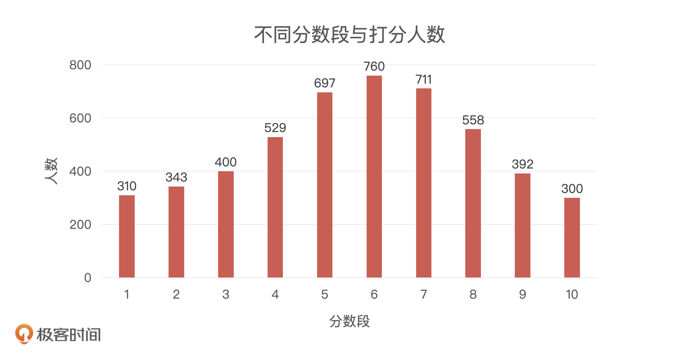
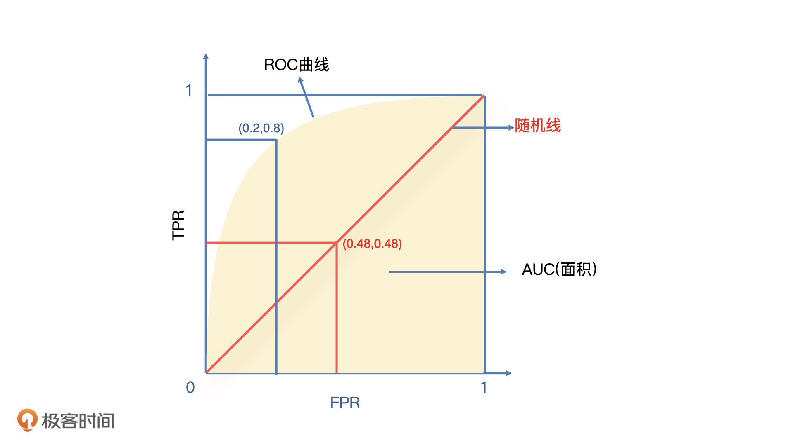
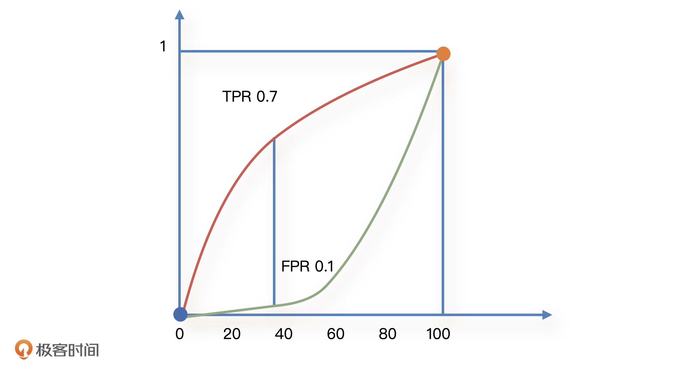
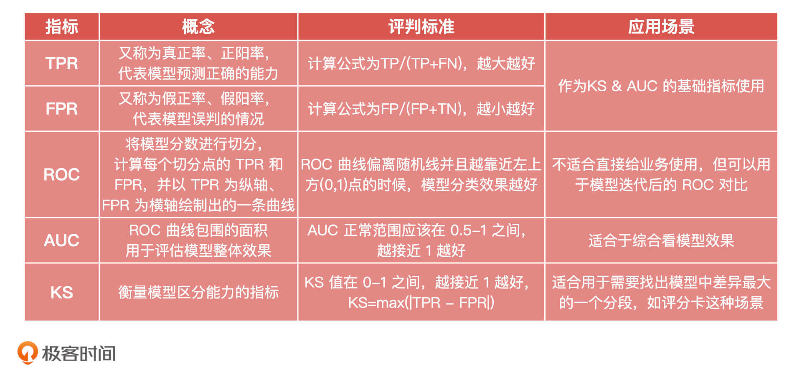
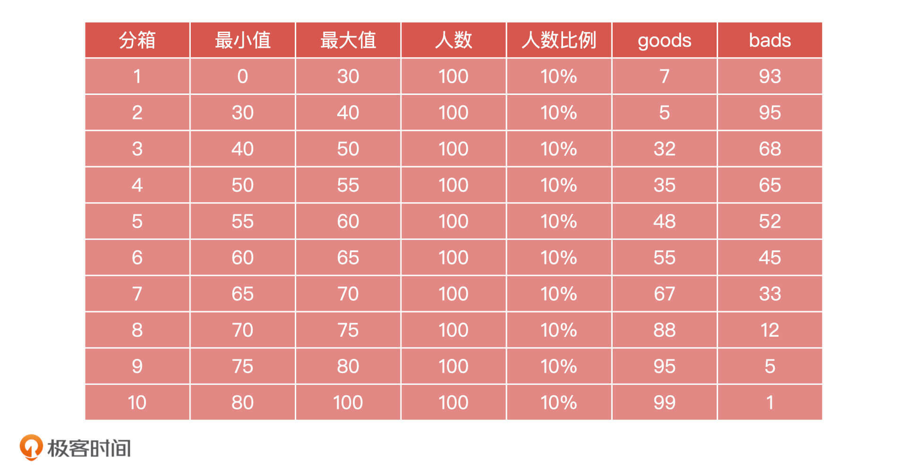

- 00 开篇词 你好，产品经理！你的未来价值壁垒在哪儿？.md.html
- 01 行业视角：产品经理眼中的人工智能.md.html
- 02 个人视角：成为AI产品经理，要先搞定这两个问题.md.html
- 03 技术视角：AI产品经理需要懂的技术全景图.md.html
- 04 过来人讲：成为AI产品经理的两条路径.md.html
- 05 通过一个 AI 产品的落地，掌握产品经理工作全流程.md.html
- 06 AI 模型的构建过程是怎样的？（上）.md.html
- 07 AI模型的构建过程是怎样的（下）.md.html
- 08 算法全景图：AI产品经理必须要懂的算法有哪些？.md.html
- 09 K近邻算法：机器学习入门必学算法.md.html
- 10 线性回归：教你预测，投放多少广告带来的收益最大.md.html
- 11 逻辑回归：如何预测用户是否会购买商品？.md.html
- 12 朴素贝叶斯：让AI告诉你，航班延误险该不该买？.md.html
- 13 决策树与随机森林：如何预测用户会不会违约？.md.html
- 14 支持向量机：怎么预测股票市场的涨与跌？.md.html
- 15 K-means 聚类算法：如何挖掘高价值用户？.md.html
- 16 深度学习：当今最火的机器学习技术，你一定要知道.md.html
- 17 模型评估：从一个失控的项目看优秀的产品经理如何评估AI模型？.md.html
- 18 核心技能：产品经理评估模型需要关注哪些指标？.md.html
- 19 模型性能评估（一）：从信用评分产品看什么是混淆矩阵？.md.html
- 20 模型性能评估（二）：从信用评分产品看什么是KS、AUC？.md.html
- 21 模型性能评估（三）：从股价预测产品看回归算法常用的评估指标.md.html
- 22 模型稳定性评估：如何用PSI来评估信用评分产品的稳定性？.md.html
- 23 模型监控：产品经理如何建设算法模型监控指标体系？.md.html
- 24 推荐类产品（一）：推荐系统产品经理的工作职责与必备技能.md.html
- 25 推荐类产品（二）：从0打造电商个性化推荐系统产品.md.html
- 26 预测类产品（一）：用户复购意向预测的底层逻辑是什么？.md.html
- 27 预测类产品（二）：从0打造一款预测用户复购意向的产品.md.html
- 28 预测类产品（三）：从0打造一款“大白信用评分产品”.md.html
- 29 自然语言处理产品：从0打造一款智能客服产品.md.html
- 30 AI产品经理，你该如何提升自己的价值？.md.html
- 31 AI产品经理面试，这些问题你必须会答！.md.html
- 春节加餐1 用户增长模型：怎么利用AI技术判断新渠道性价比？.md.html
- 春节加餐2 一次答疑，带你回顾模型评估的所有基础概念.md.html
- 期中周测试题 ，你做对了吗？.md.html
- 期中答疑 AI产品经理热门问题答疑合集.md.html
- 结束语 唯一不变的，就是变化本身！.md.html
- 捐赠
20 模型性能评估（二）：从信用评分产品看什么是KS、AUC？
你好，我是海丰。
上节课，我们学习了混淆矩阵，以及准确率、精确率和召回率这3个基础指标的计算。这节课，我们依然会借助上节课的信用评估模型，来学习二分类模型中常用的两个综合性指标，KS和AUC。
构建KS和AUC的基础：TPR和FPR
首先，我们来看两个基础指标：TPR和FPR，它们是计算KS和AUC的基础指标。
在信用评分模型中，TPR（True Positive Rate）代表模型找到真坏人（对应混淆矩阵中的TP）占实际坏人（TP+FN）的比例，它的计算公式为TPR=TP/(TP+FN)。一般来说，这个指标被称为：真正率、真阳率，用来评估模型正确预测的能力。不过，因为它的计算公式和召回率是一样的，所以为了方便我们也经常叫它召回率。
FPR（False Positive Rate）代表模型误伤（认为是坏人，实际是好人）的人占总体好人的比例，它的计算公式为FPR=FP/(FP+TN)。一般来说，这个指标被称为：假正率、假阳率，它用来评估模型误判的比率或者误伤的比率，为了方便我们也叫它误伤率。
那这两个指标是怎么构建KS和AUC的呢？别着急，我们慢慢往下看。
ROC曲线绘制和AUC的计算
在实际工作中，我们最希望的模型一定是找到的坏人足够多，并且误伤的好人足够少，也就是TPR尽量高、FPR尽量低。为了形象地表达它们之间的关系，我们引入了ROC曲线。
那么，ROC曲线具体是怎么得到呢？
这里，我们先来回顾一下上节课的信用评分模型，这个模型的分数范围是[0,100]。算法团队给出的参考阈值（60分），我们根据它对模型进行了简单的划分，得到了混淆矩阵以及相应的召回率等指标。
如果我们没有这个阈值呢？实际上，我们在模型分数的每一个点上都可以做这样的划分（也就是把每一个分数点都当作是一个阈值），这样就可以得到一连串的指标。想想都知道，对所有分数进行划分会非常麻烦。虽然不能对所有分数进行划分，但是我们可以对分数进行分段处理。比如说，我们的打分人数有5000人，我们按照每10分进行一个分段，就能得到下面这张图。

结合上面的图，我们可以分3种情况进行讨论。
第一种情况是一种极端情况：阈值定在0分上，小于0的是坏人，大于0的是好人。 这个时候，虽然0分以下没有任何人，但是我们仍然可以得到相应的混淆矩阵，也就可以得到对应的TPR和FPR。
这个时候的TPR是多少呢？我们不需要计算，根据定义思考一下就知道了。因为模型只有[0,100]，没有人的打分是小于0的，这也就意味着模型没有分辨出任何一个坏人，所有人都是好人，找坏人的能力TPR就是0。
那么，FPR是多少呢？同样的，因为模型认为没有人是坏人，所以它没有产生任何一个误伤，误伤率FPR就是0。
第二种情况也是一个极端的情况：阈值定在100分，小于100分都是坏人，大于100分都是好人。 这个时候，模型会认为所有人都是坏人，所以模型能找到所有的坏人，TPR=1。同理，模型把所有人都当成了坏人，就相当于误伤了所有的好人，所以FPR=1。
第三种情况是正常情况：阈值定在一个非0分和非100分的分数上，如60分。 那么，TPR和FPR分别会得到一个在0-1范围内的值，如TPR=0.8，FPR=0.2。
同样的，我们也可以把这个阈值分别定在10分、20分、30分这些点位上，就会得到一连串的TPR和FPR。如果我们把FPR做横轴，TPR做纵轴，一个TPR和FPR就对应了一个点。当把这些点都连起来之后，我们就可以得到如下一条蓝色的曲线：

总的来说，ROC曲线就是在没有准确阈值的情况下，对所有分数进行分段处理，计算每一个切分点对应的TPR和FPR，以FPR做横轴、TPR做纵轴绘制出的一条曲线。
除了蓝线，我们看到图中还有一条红线，它是一条随机线，这条随机线上的每一个切分点的FPR和FPR都是相等的。它表示模型每次切分时，抓到坏人的概率和误伤好人的概率都是一样的。这和我们随机猜测的概率相同，所以模型的ROC曲线越贴近这条随机线，模型的分类效果就越差。甚至，如果ROC曲线在随机线下面，就说明模型预测结果和我们预期结果是反的，而当ROC曲线越偏离随机线并且靠近左上方(0,1)点的时候，说明模型分类效果越好，因为这个时候，模型的TPR=1，FPR=0。
虽然，我们通过ROC曲线可以区分模型的好坏，但这还不够直观，而且和业务方沟通时候，我们也不能直接让他们去看这张图。
因此我们想到，是不是可以把曲线右下方和横坐标轴闭合起来的面积作为一个评估指标。这个面积就是我们图上蓝色的阴影部分，它就是AUC指标。一般来说AUC都在0.5到1之间，AUC越高代表模型的区分能力越好。如果AUC=0.5，那ROC曲线与图中红线重合，表示模型没有区分能力，它的结果等于随机猜测；如果AUC小于0.5，说明这个模型大概率很差。
KS的计算
现在我们知道了AUC是什么，那么KS又是什么呢？其实，KS曲线和ROC曲线的本质和数据的来源都是一致的。只不过，ROC代表的是模型召回率和误伤率之间的变化关系，KS代表的是在某一点上，模型召回率最大并且误伤率最小。
因此，我们在绘制ROC曲线的时候，是用召回率和误伤率来做纵轴和横轴，而在绘制KS曲线的时候，我们把召回率和误伤率都作为纵轴，把切分的分数点作为横轴。这个时候，一个切分点会同时得到TPR和FPR两个值，所以我们可以画出来两条曲线。具体是怎么操作的呢
我们还是以[0,100]的模型分数范围为例，每10分做一个分段（如0分是一个切分点，10分是一个切分点，20分是一个切分点….），在每一个切分点上，我们都可以得到一对TPR和FPR。
对于得到的TPR和FPR，我们也可以和刚才一样，分三种情况讨论。
第一种情况，切分点在0。这个时候，模型认为没有任何人是坏人，所以TPR = 0，FPR也是0。因此，在横坐标0这个点上，我们得到了两个数值相同的点，也就是图上左下角蓝色的点。
第二种情况，切分点在100。这个时候，TPR和FPR都是1，所以得到右上角橘色的点。
第三种情况，切分点非0、非100。假设，我们还是以60分作为切分点，也会得到一对TPR和FPR。
就这样，等我们把所有切分点遍历之后，就能得到所有切分点的TPR和FPR值。然后，我们把它们放到坐标系中，把得到的TPR和FPR的值分别连接起来，就能得到两条曲线。这个坐标系的横轴就是我们对信用评分的切分点，如果我们信用分是[0,100]范围，那它就是从0到100的数值。
如下图所示，红色线是我们在不同的切分点得到的所有TPR的曲线，绿色线是相应的FPR曲线。它们在（0，0）和（100，1）这两个点相交。

由于KS代表的是在某一点上，模型召回率最大同时误伤率最小，所以KS就是图中红色线和绿色线间隔最大时候的距离。
如图，TPR和FPR在切分点为40的时候距离最大，这就意味着当我们拒绝给40分以下的人进行贷款，同时通过40分以上的人的信贷请求时，业务的收益最大。这是因为，我们拒绝了足够多的坏人，同时误伤了足够少的好人。那么，KS就是在这个点上，TPR-FPR的数值了。
具体到图中，KS = 0.7- 0.1=0.6，所以我们这个模型的KS就是0.6。在实际业务中也有人会说“我们KS是60”，这也是正常的。
那么，对于信用评分产品来说，KS指标是多少才合适呢？对于用于贷前审批的信用评分（申请评分卡）模型来说，一般业内会分为4种情况：
- KS<20：欠拟合，模型基本不具备可用性
- KS>20&KS<30：模型可用
- KS>30&KS<40：模型预测能力优秀
- KS>40：模型的区分度很高。但同时我们也要对这个结果持怀疑态度，进一步去分析入模变量中是否有一些滞后变量，来确认结果的准确性
总的来说，如果模型的KS或者AUC值很高，不一定是一件好事情。我们需要了解背后的原因，这有可能是数据不准确导致的。比如，在贷前信用评分场景下，KS值大于50或者AUC大于80时，我们就需要注意一下数据的准确性了。
小结
这节课，我们讲了分类模型评估的进阶指标：KS和AUC，它们是我们在模型评估中用得比较多的指标。围绕它们的构建，我们又讲了TPR、FPR和ROC曲线，为了方便你记忆和对比，我把它们的核心概念、公式适用场景都总结在了下面的表格中，你可以看看。

这两节课，我们以一个信用评估模型的例子，讲完了分类模型的评估。总的来说，不同类型和不同公司的AI产品经理需要掌握的评估能力可能不同。
比如说，应用层的AI产品经理可能只需要知道召回率、精确率这些就可以了。但是，B端做金融风控模型的产品经理，就需要知道KS是什么，它是怎么来的，甚至要学会看不同测试集下面的KS是否合理。
就像我之前遇到一个情况：OOT测试的KS是40，测试集的KS是39，训练集的KS是35。虽然我们用的都是真实数据，但结果依然不合理，如果我把这样的结果交付给客户，客户不只会质疑我的专业程度，更有可能怀疑我们公司的技术能力。
因此，我们只有确定好自己要努力的目标，才能知道这些内容自己要掌握哪些，掌握到什么程度，比如做互联网应用的产品经理一般掌握召回率、准确率、AUC 这些指标就可以完成大部分的工作了。当然，如果你想全面系统化地学习AI技术，那么尽可能地拓展自己的知识面总没有错。
课后讨论
在这里，我想请你尝试手动计算一下KS值。虽然实际工作中我们不需要手工计算，但是我希望你可以通过本次课后题，加深对KS的理解。
下面是我们一个信用评分产品的测试数据，我已经将分数做好了分箱（我这里使用了等频分箱），并且得到了好、坏用户的数量（goods,bads），请你计算这个产品的KS值是多少。

期待在留言区看到你的分享和答案，我们下节课见！
© 2019 - 2023 Liangliang Lee. Powered by gin and hexo-theme-book.